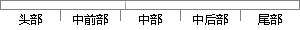

本作品界面设计由主页面和用户界面构成。
片段位置图

相似结果|
相似片段 1：。3．1．2功能模块需求用户界面需求l、搜索主页搜索主页为用户访问搜索引擎的前台页面，该页面提供了其他页面连接及基本搜索数据的输入。界面设计如图3．1所示。·29—图3．1搜索主界面2、个人FTP主机登记主机
相似片段 2：主页上存在入口，用户可以通过点击按钮进入子功能页面。这样的界面设计使系统界面结构清晰，功能集中，可以提高用户的交互满意度【201。本系统共有10个主要页面和对话框，页面功能和界面元素如下：1．登录界面
相似片段 3：)普通用户浏览页面图4—5普通用户主界面设计图图4—6普通用户浏览页丽样式图．．46．．3、权限用户界面设计：(1)登陆界面设计(2)权限用户主页面图4—7权限用户登陆界面图4—8权限用户主页面图(3
相似片段 4：：1．1kmr3 2031Hair&MakeUp2l，Floor3 203I图3．19管理员用户主界面图3．20管理员单项查看页面37图3．2l作品信息编辑页面图3．22确认删除页面观展用户界面设计按预设交互流程
相似片段 5：二者的界面设计特点之后，决定将用户交互界面设计如下。图 5-4 数据检索界面检索主页面除此之外的设计延承 Google、Baidu 的简约主页设计风格，突出检索主体功能。搜索结果页面也采用的偏紧凑的半页面覆盖式布局，同时页面背景采用白色，让用户可以舒适的对搜索结果进行遴选。
|
※ 片段修改建议 ※
近似词参考：- 构成：组成 形成
系统自动生成语句： 本作品界面设计由主页面和用户界面组成。
注：本片段修改建议为系统自动生成，仅供参考。